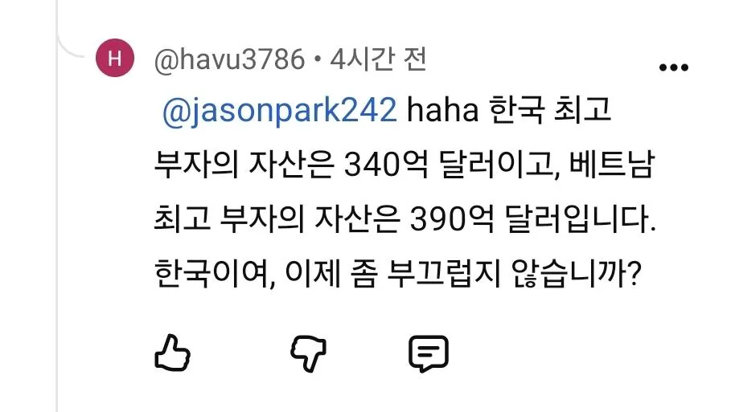

내가 본 g식백과 배그 댓글 중 제일 웃겼던거..
저 숫자가 맞는지 틀린지도 모르겠지만.. 설사 맞다 한 들 베트남 빈부격차 존나 큰 걸 왜 한국이 부끄러워 해야하지?ㅋㅋ

내가 본 g식백과 배그 댓글 중 제일 웃겼던거..
저 숫자가 맞는지 틀린지도 모르겠지만.. 설사 맞다 한 들 베트남 빈부격차 존나 큰 걸 왜 한국이 부끄러워 해야하지?ㅋㅋ
맞음...
아니 아예 없다고 보는게 맞을듯
다른글에서 댓글봤는데 의무교육을 2019년에 시작했다더라
동아시아에서는 한중일끼리만 놀자
한국은 베트남의 발전을 두려워합니까??
철구가 어쩌고 콘
너네.. 공산국가인데 왜 부자에 자아의탁해
니네 공산주의 아니냐?ㅋㅋ
내가 저런 걸 자랑스러워 하던 건 끽해야 초등학교 2학년까지였는데... 순수해서 귀엽다
병신
한국 분할상장이 뭔질 모르는구나
뭔진 모르지만 계속 자랑스러워 하세요~
빈 그룹이 크긴하지
자아의탁 할 게 없어서 자국 최고부자한테 자아의탁을 하냐 븅신아..
그 존나 부자인 그 새끼가 내수매출만 99퍼센트인 우물 안 존나큰 개구린새끼인건 안 부끄럽나.... 크면 뭐함 우물밖으로 쳐 나오지도 못하는데
저정도 부자가 있는데 나라가 그정도면 에효..
사실 존나 부끄러운건 삼성가가 저정도의 주식을 가지고 있는 것은 조세회피를 위해서이며 그게 가능한 이유는 꼴랑 저걸 가지고 2500조 규모의 삼성을 사유화 할 수 있다는 것 때문이라는 점임.
진심 너무 불쌍하다
베트남은 교육시스템이 엉망진창이냐?